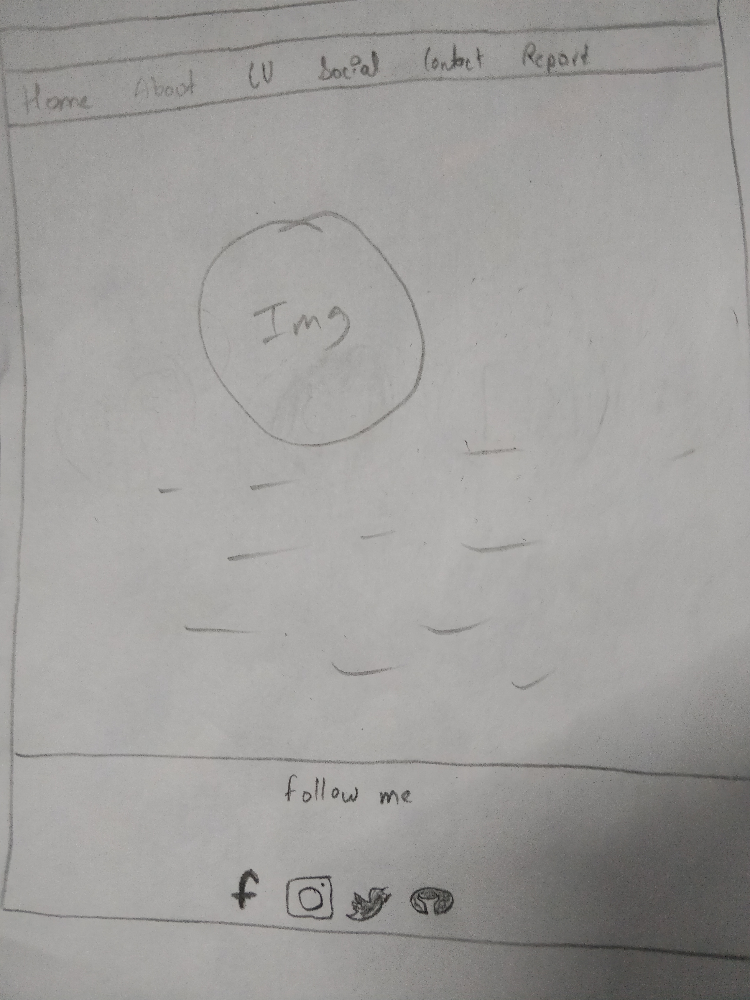
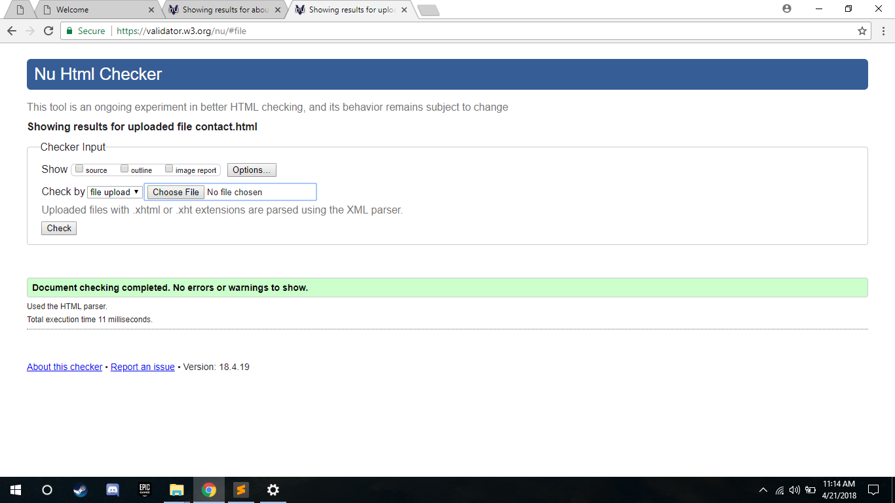
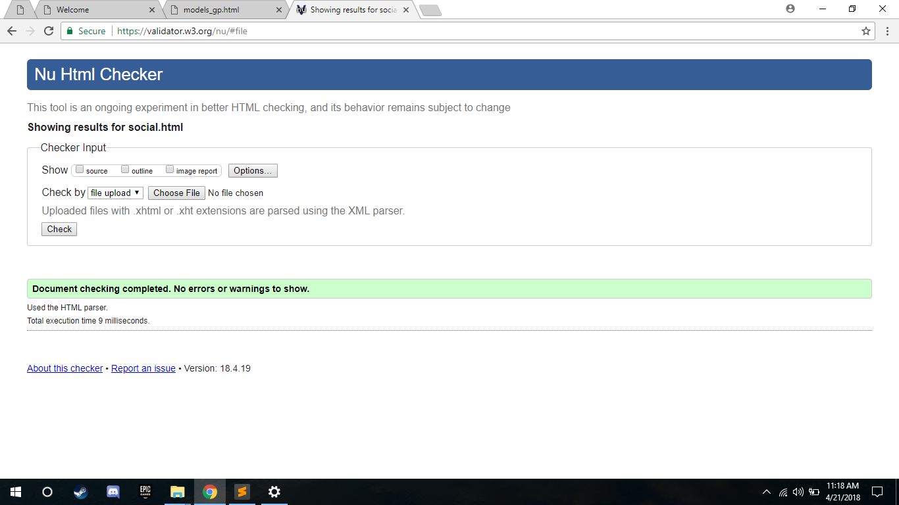
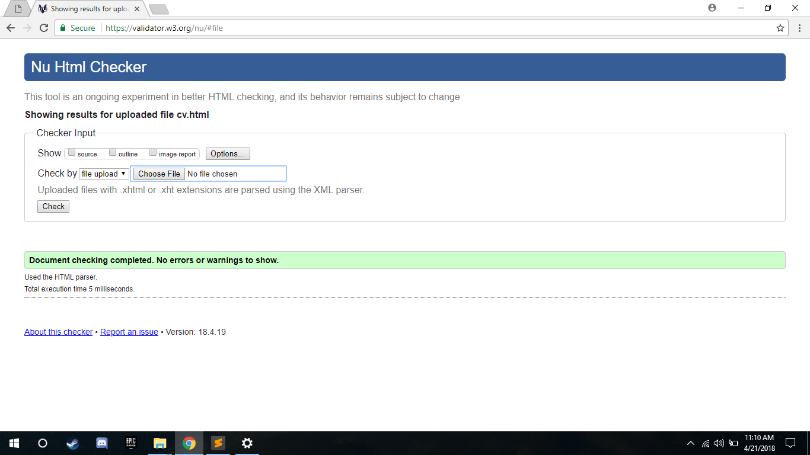

Table of contents
1. Introduction
2. UI designs
3.Wireframe
4.Testing and validation
5.My Experience
6.References
1. Introduction
Web development is the process which can develop web page. This application is generally the application which run in a web browser while the website are generally done in various browser like Google chrome, safari , Firefox etc. webpage are created so to Share message through world .it can be access from worldwide web. our first task is to create the webpages which consists our resume.
An assingment was provided to create a personal webpage. To develop a webpage and generalize the knowlege of webdesigning i looked different tuterials, slides which were taught on the lecture classes. To design my personal website, I looked different personal sites and grabbed some ideas about the personal webpage. To design my personal webpage firstof all i created thewireframes of the webpage, then started to write the code on HTML and CSS. After the design of the webpage i tested the side using validator, solved the problems and make it to work properly.
2. UI designs
User interface is such a thing which focus maximum on the usabiity of the user experience . It help this with many thing which makes the website very user friendly and accesible for new users. UI cannot give you a very good looking website, but it will obiously will give you an smooth and gives you very good performance. Best color combination, animations, use of material designs, hover effects are the examples of good UI designs.
3.Wireframe
Wireframes are the basic layout design for the webpages, which generally defines the layout of the website. generally it is also deefinr as the blueprint or sketch of the site. i had created the wireframes to generalize how the system looks and how it can be designed. some of the wireframes are mentioned below.



4.Testing and validation
After comleting the design phase, the webpage was tested using w3.org validator, inorder to check the speed, working and errors of the site. some of the errore were detected on codes which i soved later. The evidences for the validations are mentioned below with the screenshots.




5.My Experiences
learnimg HTML and CSS was fruitful for me. i learned many things on HTML and CSS. some of the basic concepts like animation, material design, flexbox, transation,flex properties are used in the site. i learned these coceps in lectures and tuterials. using it in mypersonal site made me more clear about these concepts. I faced some problems on creating mobile responsive sites. Watching tuterial videos and discussing it with friends helped me to solve the problem8.Reference
- CSS Media Queries. 2018. CSS Media Queries. [ONLINE] Available at: https://www.w3schools.com/css/css3_mediaqueries.asp. [Accessed 22 April 2018].
- CSS Flexbox (Flexible Box). 2018. CSS Flexbox (Flexible Box). [ONLINE] Available at: https://www.w3schools.com/css/css3_flexbox.asp. [Accessed 22 April 2018].
- CSS Animations. 2018. CSS Animations. [ONLINE] Available at: https://www.w3schools.com/css/css3_animations.asp. [Accessed 22 April 2018].
- CSS Navigation Bar. 2018. CSS Navigation Bar. [ONLINE] Available at: https://www.w3schools.com/css/css_navbar.asp. [Accessed 22 April 2018].
- Icons from Font Awesome, Bootstrap and Google. 2018. Icons from Font Awesome, Bootstrap and Google. [ONLINE] Available at: https://www.w3schools.com/icons/icons_reference.asp. [Accessed 22 April 2018].
- HTML Forms. 2018. HTML Forms. [ONLINE] Available at: https://www.w3schools.com/html/html_forms.asp. [Accessed 22 April 2018].
1.